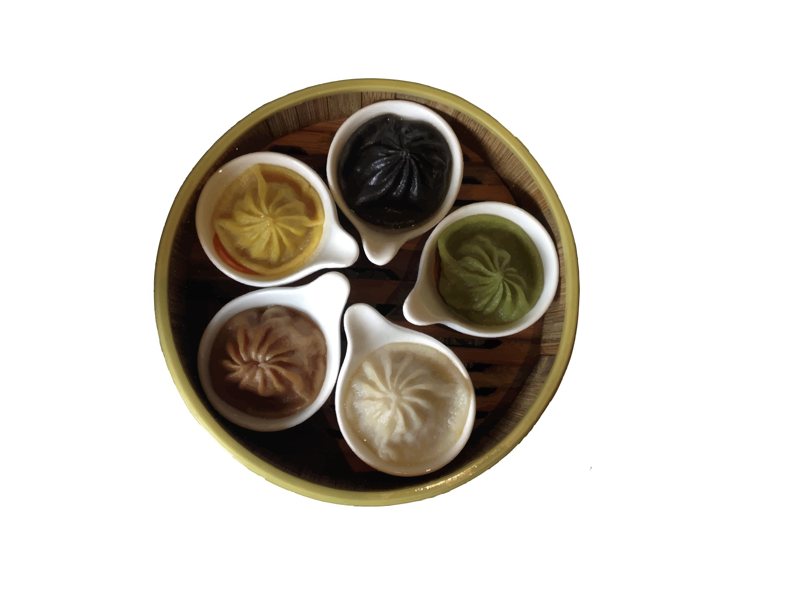

The Culture of Food
The story for “In the Mood for Food” is essentially telling the story of two immigrants, one from China and one from Taiwan, and the history of their childhood in relation to food. From there, they compare how Americanized Chinese food to actual Chinese food from China. The story shows how much of an impact food has in our lives and how closely it ties with culture and upbringing.
With a growing population of 2.3 million in 2016, Chinese immigrants are the “third-largest foreign-born group on the United States” (migrationpolicy.org). Whether they are international students coming in for a foreign education or migrants looking for better working opportunities, what ties these two demographics together is a shared culture in food.
In Chinese and Taiwanese culture, food plays a major role in everyday life because of the importance of using raw materials to create a dish that can be shared with a table of people. Recipes themselves can be adapted, molded, changed, or substituted, but the end result is still Chinese food whether the family is lower class or upper class.
We interviewed two people from different demographics; Grace*, an immigrant from China who owns an Asian fusion restaurant, and Michelle, an international student from Taiwan studying design.
(*Some names and identifying details have been changed to protect the privacy of individuals.)
Q: Where are you from?
Grace:
Fujian, China
Michelle:
Kaohsiung, Taiwan
Q: What are your eating habits?
Grace:
I’m not picky, so I eat everything from Chinese food, American food, Thai food, but mostly Chinese food. When I stay with my kids, I cook American style food, but when I stay with my father and mother, I eat my hometown style of food; it’s kind of flexible.
Michelle:
I love to eat. I also tend to stress eat, like eating fries and junk food at midnight or just stuffing food into my mouth when I'm stressed– which is bad. I eat out with my friends, and I yelp a lot; I would even wake up early or travel far just to get the food I want to eat. I also love cooking! Although I don't cook as much now, I still like to cook when I have free time. I love searching up recipes or watching cooking videos and trying out my own recipes by creatively adding ingredients into the dish.
Q: What kinds of food did you grow up eating?
Grace:
I would eat seafood a lot because we lived close to the ocean, so we ate lots of crabs, shrimp, fish with bone, anything with water. Normally in the household, we eat rice, stir fry bok choy, steamed shrimp and fish. Since we opened the restaurant, there’s not enough time to cook in the house, so we usually eat express food like burritos and teriyaki with veggies.
Michelle:
Taiwanese food and the food my mom cooks, which is often time healthy. She would purchase organic groceries and invest her time in choosing the best quality of meat for us. I wasn't really into boba in Taiwan until I came here; now I drink boba every week.
